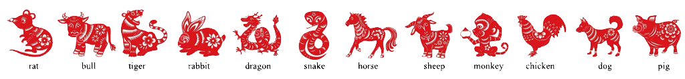
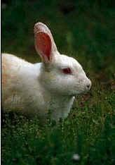
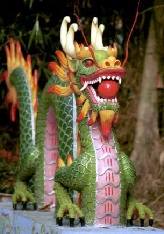
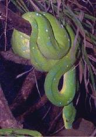
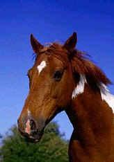
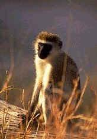

|

Our Chinese Zodiac Animals (十二生肖動物)
If you've ever eaten in a Chinese restaurant, you may have seen the
placemats that display the 12 animals of the
Chinese 'zodiac.' Depending on the year in which you were born, you will 'be' one of these
animals. Many Chinese take this zodiac sign very seriously, and are quick to point out the
characteristics they have that are associated with their animal.
Click on each picture to see who's what in our family. (Or click here
to reveal all or here to reset.)
This year, 2026, is the year of the Horse, the new year beginning on Tuesday, February 17. The animals, in their
order in the 12-year cyclical zodiac are:
|
鼠
Rat
2032 |
|
People born in the Year of the Rat are noted for their
charm and attraction for the opposite sex. They work hard to achieve their goals,
acquire possessions, and are likely to be perfectionists. They are basically thrifty
with money. Rat people are easily angered and love to gossip. Their ambitions are big,
and they are usually very successful. They are most compatible with people born in
the years of the Dragon, Monkey, and Bull. |
|
牛
Bull
2033 |
|
People born in the Year of the Bull are patient, speak
little, and inspire confidence in others. They tend, however, to be eccentric, and
bigoted, and they anger easily. They have fierce tempers and although they speak
little, when they do they are quite eloquent. Bull people are mentally and physically
alert. Generally easy-going, they can be remarkably stubborn, and they hate to fail
or be opposed. They are most compatible with Snake, Chicken, and Rat people. |
|
虎
Tiger
2034 |
|
People born in the Year of the Tiger are sensitive,
given to deep thinking, and
capable of great sympathy. They can be extremely short-tempered, however. Other
people have great respect for them, but sometimes tiger people come into conflict
with older people or those in authority. Sometimes Tiger people cannot make up
their minds, which can result in a poor, hasty decision or a sound decision
arrived at too late. They are suspicious of others, but they are courageous
and powerful. Tigers are most compatible with Horses, Dragons, and Dogs. |
 |
兔
Rabbit
2035 |
|
People born in the Year of the Rabbit are articulate,
talented, and ambitious. They are virtuous, reserved, and have excellent taste.
Rabbit people are admired, trusted, and are often financially lucky. They are
fond of gossip but are tactful and generally kind. Rabbit people seldom lose
their temper. They are clever at business and being conscientious, never
back out of a contract. They would make good gamblers for they have the uncanny
gift of choosing the right thing. However, they seldom gamble, as they are
conservative and wise. They are most compatible with those born in the years
of the Sheep, Pig, and Dog. |
 |
龍
Dragon
2036 |
|
People born in the Year of the Dragon are healthy,
energetic, excitable, short-tempered, and stubborn. They are also honest,
sensitive, brave, and they inspire confidence and trust. Dragon people are the
most eccentric of any in the eastern zodiac. They neither borrow money nor make
flowery speeches, but they tend to be soft-hearted which sometimes gives others
an advantage over them. They are compatible with Rats, Snakes, Monkeys, and Chickens. |
 |
蛇
Snake
2037 |
|
People born in the Year of the Snake are deep. They
say little and possess great wisdom. They never have to worry about money; they
are financially fortunate. Snake people are often quite vain, selfish, and a bit
stingy. Yet they have tremendous sympathy for others and try to help those less
fortunate. Snake people tend to overdo, since they have doubts about other people's
judgment and prefer to rely on themselves. They are determined in whatever they
do and hate to fail. Although calm on the surface, they are intense and passionate.
Snake people are usually good-looking and sometimes have martial problems because
they are fickle. They are most compatible with the Bull and Chicken. |
 |
馬
Horse
2026 |
|
People born in the Year of the Horse are popular.
They are cheerful, skillful with money, and perceptive, although they sometimes
talk too much. The are wise, talented, good with their hands, and sometimes have
a weakness for members of the opposite sex. They are impatient and hot-blooded
about everything except their daily work. They like entertainment and large crowds.
They are very independent and rarely listen to advice. They are most compatible
with Tigers, Dogs, and Sheep. |
|
羊
Sheep
2027 |
|
People born in the Year of Sheep (also called the Year of the Ram)
are elegant and highly
accomplished in the arts. They seem to be, at first glance, better off than those
born in the zodiac's other years. But Sheep year people are often shy, pessimistic,
and puzzled about life. They are usually deeply religious, yet timid by nature.
Sometimes clumsy in speech, they are always passionate about what they do and what
they believe in. Sheep people never have to worry about having the best in life
for their abilities make money for them, and they are able to enjoy the creature
comforts that they like. Sheep people are wise, gentle, and compassionate. They
are compatible with Rabbits, Pigs, and Horses. |
 |
猴
Monkey
2028 |
|
People born in the Year of the Monkey are the erratic
geniuses of the cycle. Clever, skillful, and flexible, they are remarkably inventive
and original and can solve the most difficult problems with ease. There are few
fields in which Monkey people wouldn't be successful but they have a disconcerting
habit of being too agreeable. They want to do things now, and if they cannot get
started immediately, they become discouraged and sometimes leave their projects.
Although good at making decisions, they tend to look down on others. Having common
sense, Monkey people have a deep desire for knowledge and have excellent memories.
Monkey people are strong willed but their anger cools quickly. They are most
compatible with the Dragon and Rat. |
|
雞
Chicken
2029 |
|
People born in the Year of the Chicken are deep
thinkers, capable, and talented. They like to be busy and are devoted beyond
their capabilities and are deeply disappointed if they fail. People born in
the Chicken Year are often a bit eccentric, and often have rather difficult
relationship with others. They always think they are right and usually are!
They frequently are loners and though they give the outward impression of
being adventurous, they are timid. Chicken people's emotions like their fortunes,
swing very high to very low. They can be selfish and too outspoken, but are always
interesting and can be extremely brave. They are most compatible with Bull, Snake,
and Dragon. |
|
狗
Dog
2030 |
|
People born in the Year of the Dog possess the best
traits of human nature. They have a deep sense of loyalty, are honest, and inspire
other people's confidence because they know how to keep secrets. But Dog People
are somewhat selfish, terribly stubborn, and eccentric. They care little for wealth,
yet somehow always seem to have money. They can be cold emotionally and sometimes
distant at parties. They can find fault with many things and are noted for their
sharp tongues. Dog people make good leaders. They are compatible with those born
in the Years of the Horse, Tiger, and Rabbit. |
|
豬
Pig
2031 |
|
People born in the Year of the Pig (also called
the Year of the Boar) are chivalrous
and gallant. Whatever they do, they do with all their strength. For Pig Year
people, there is no left or right and there is no retreat. They have tremendous
fortitude and great honesty. They don't make many friends but they make them for
life, and anyone having a Pig Year friend is fortunate for they are extremely
loyal. They don't talk much but have a great thirst for knowledge. They study
a great deal and are generally well informed. Pig people are quick tempered,
yet they hate arguments and quarreling. They are kind to their loved ones. No
matter how bad problems seem to be, Pig people try to work them out, honestly
if sometimes impulsively. They are most compatible with Rabbits and Sheep. |
To find out what animal you are, take the year of your birth, add some
multiple of 12 to it (12, 24, 36, 48, 60, 72, 84, etc.) to get a year between
2026 and 2037.
Then check the list above to see what animal you are. For example, if you were born in
1969, add 60 to it to get 2029 which would make you a chicken.
|
{kind=link}